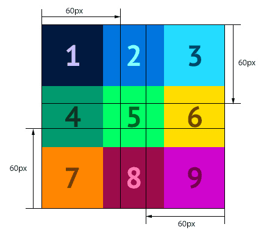

Свойство border-image-slice

Каждая рамка имеет 9 областей: 4 угла, 4 стороны и центральную область. Для заполнения этих областей браузер должен нарезать картинку для рамки на 9 частей. Когда браузер не знает, как это сделать, он просто размещает картинку по углам.
Свойство border-image-slice задаёт отступы от краёв картинки до четырёх линий, которые «разрезают» её на части, как на схеме справа. Если отступы небольшие, то получается «нарезка» из 9 частей, которые затем размещаются в соответствующих областях рамки.
Но если отступы слишком большие (больше половины картинки), то браузер не может получить 9 частей и располагает то, что отрезалось по углам.
Значение свойства можно задавать числом без единицы измерения (оно обычно обозначает пиксели) или в процентах (относительно размера самой картинки).
Примеры:
border-image-slice: 60;
border-image-slice: 10%;Можно задавать разные отступы линий разреза. Для этого нужно задавать значения через пробел в порядке: верх, право, низ, лево.
Пример:
border-image-slice: 10 20 30 40;Средняя часть картинки обычно не используется. Но если в значение свойства добавить ключевое слово fill, то средняя часть картинки будет отображаться в средней области рамки: она закроет собой фон блока, но не закроет содержимое.
Пример:
border-image-slice: 10 20 30 40 fill;